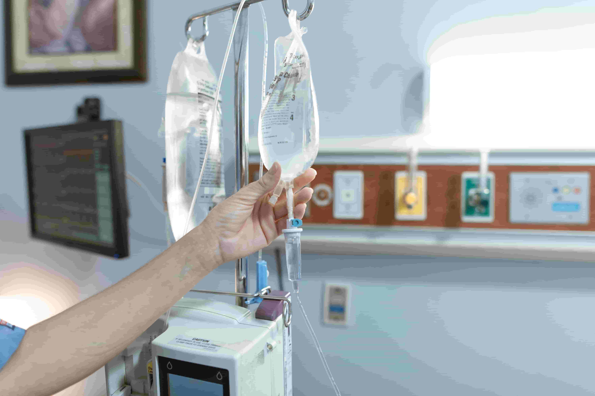

Безпечна медична детоксикація вдома або в стаціонарі. Виїзд лікаря протягом 30 хвилин.

Запій — це тривале вживання алкоголю протягом кількох днів або тижнів, коли людина не може самостійно зупинитися. Виведення з запою — це медична процедура, яка допомагає безпечно очистити організм від токсинів та стабілізувати фізичний і психологічний стан.
Досвідчений нарколог приїжджає до вас додому або в інше зручне місце протягом 30–60 хвилин після дзвінка.
Лікар оцінює загальний стан пацієнта: вимірює тиск, пульс, оцінює рівень інтоксикації, збирає анамнез та виявляє протипоказання.
Встановлюється крапельниця з комплексом препаратів: сольові розчини, вітаміни, гепатопротектори, седативні засоби. Процедура займає 1–2 години.
Після процедури лікар дає докладні рекомендації щодо подальшого лікування, дієти, режиму дня та можливості проходження реабілітації.
Зателефонуйте нам прямо зараз — лікар приїде протягом 30 хвилин. Цілодобово, анонімно, без виходних.
Зателефонувати зараз